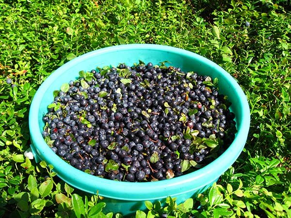
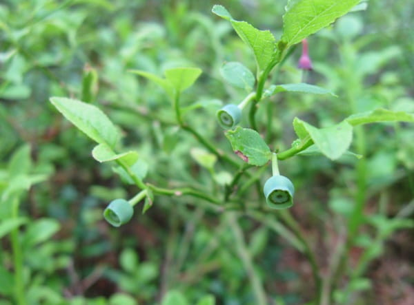
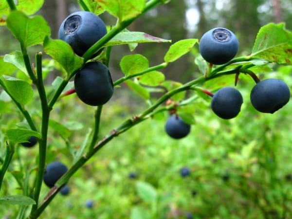
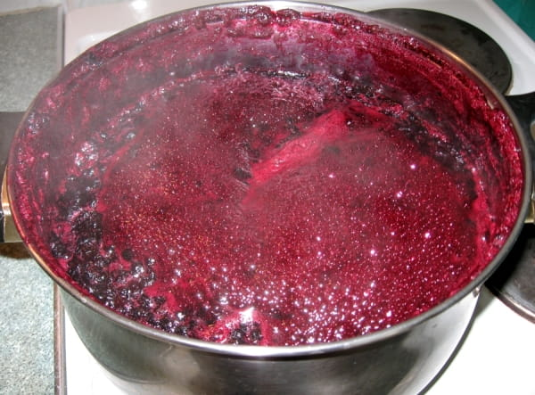

Черника — дар леса: польза, сбор и хранение
Ботаническое описание
{kind=link}

Черника - это невысокий (150...500 мм) кустарник со множеством ветвей с яйцевидными остроребристыми листьями. Ягоды шаровидной формы, черно-синего цвета, слегка приплюснутые, с вогнутой вершинкой. На вершине заметна нарядная кольцевая оторочка — остаток чашелистиков. Сочная красновато-фиолетовая мякоть обладает неповторимым кисловатым вяжущим вкусом.
Где растёт
Черника встречается в разнообразных природных зонах. Растёт в сосновых борах,черничных ельниках, елово-широколиственных лесах, в тундрах и лесотундрах, на сфагновых болотах.
Сезонность и традиции употребления
Растение начинает цвести в мае. Черника созревает в середине июля. В Карелии чернику начинают употреблять в пищу после Петрова дня (12 июля). В этот день, завершив Петров пост, местные пекут первые пироги с черникой. В начале сезона ягода ещё не достигает полного вкусового совершенства, поэтому её чаще используют в переработанном виде, а не едят свежей.
{kind=link}

Сбор черники
Для лечебных и кулинарных целей используют как ягоды, так и листья. Ягоды собирают вручную или с помощью специальных приспособлений (грабилок, «комбайнов»). Ручной сбор предпочтительнее: так удаётся сохранить целостность спелых ягод, избежать попадания перезревших или повреждённых плодов. Листья заготавливают в период цветения. Срезают молодые побеги без цветков с помощью ножниц.
Для лечебных целей применяют и ягоды и листья. Ягоды черники собирают вруюную или с помощью приспособлений: грабилок, "комбайнов". Собранная вручную, ягода имеет бОльшую ценность, т.к. при ручном сборе спелая ягода не раздавлнена, чище и не содержит перезрелых, больных плодов. Черничные листья заготавливают во время цветения. Отделяют ножницами молодые побеги листьев без цветков.
Лечебная польза
Черника ценится за богатый состав и полезные качества. Ягоды черники являются источником витаминов С, A, В, элементов марганца, магния, кальция, волокон и флавоноидов. Благодаря богатому содержанию дубильных веществ черника обладает вяжущим и противопоносным свойством.
Влияние на зрение
Исторически считалось, что черника улучшает сумеречное зрение. Например, во время Второй мировой войны британские лётчики ели черничный джем перед ночными полётами. Однако исследование, проведённое на американском флоте в 2000 году, не подтвердило этого эффекта. При этом лабораторные исследования указывают на потенциальную пользу черники при некоторых заболеваниях глаз, включая отслоение сетчатки.
Хранение и использование черники
Есть несколько способов хранения. Чернику хранят в свежем,замороженном, сухом виде, готовят варенье.
{kind=link}

Краткосрочное хранение свежей в холодильнике
Подготовка к краткосрочному хранению
Не мойте ягоды сразу после сбора — на них есть естественный восковой налёт, защищающий от плесени и преждевременного размягчения. Переберите ягоды: удалите мятые, подпорченные, неспелые. Выложите чернику в контейнер с бумажным полотенцем на дне — оно впитает лишнюю влагу.
Условия хранения в холодильнике
Поместите ягоды в самую холодную зону холодильника (верхняя полка или отсек для овощей). Используйте негерметичный контейнер — нужен доступ воздуха (идеально: контейнер с дырочками или приоткрытой крышкой). Если ягоды были промыты (например, остались недоеденными), просушите их на полотенце в один слой, затем уберите в холодильник. Срок хранения: 3–5 дней.
Заморозка
Подготовка черники к заморозке
Выбирайте свежие, плотные, спелые ягоды без повреждений. Лучше замораживать в день сбора. Тщательно переберите: удалите мусор, ножки, испорченные экземпляры. При желании промойте, но затем обязательно просушите на бумажных полотенцах 4–5 минут.
Процесс заморозки
Разложите ягоды в один слой на доске, противне или специальном лотке для заморозки. Поместите в морозильную камеру — через 1–2 часа ягоды полностью замёрзнут. Пересыпьте замороженные ягоды в зип-пакеты или контейнеры, плотно закройте. Альтернатива: можно заморозить пюре из черники — разлейте его в небольшие формочки для создания порционных заготовок (удобно для морсов, чая, десертов). Срок хранения в морозилке: до 1 года.
Размораживание
Медленно: переложите нужное количество ягод в тарелку и оставьте в холодильнике. Для некоторых блюд (кексы, вареники) разморозка не требуется.
Переработка черники
{kind=link}

Варенье. Классический способ сохранения ягод с длительным сроком хранения.
Черника, протёртая с сахаром. Позволяет сохранить витамины без термической обработки.
Джем. Удобен для использования в выпечке и десертах.
Сушка
Сушёная черника хранится долго и используется в кашах, выпечке, как добавка к мюсли. Для сушки подойдут специальные дегидраторы или духовка (на минимальной температуре с приоткрытой дверцей).
Важная информация по хранению ягод
Черника быстро портится — не откладывайте обработку. Избегайте мытья, если планируете хранить ягоды дольше суток. При покупке проверяйте ягоды на плесень: испорченные экземпляры могут заразить остальные. Замороженные ягоды сохраняют вкус, аромат и большую часть полезных свойств.
Выбирайте способ хранения в зависимости от целей: краткосрочное употребление, заготовки на зиму или использование в кулинарии.
Таким образом, черника — не только вкусная лесная ягода, но и ценный природный дар леса с широким спектром применения!